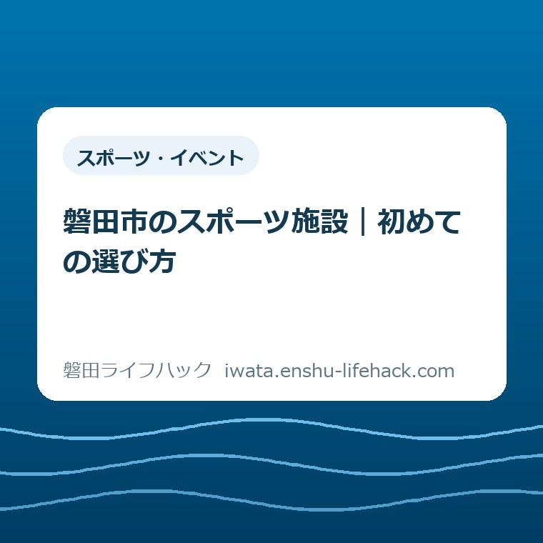

スポーツ・イベント
磐田市のスポーツ施設｜初めての選び方

この記事の要点
Q. 磐田市で運動を始めるなら、どの施設をどう選べばいい？
A. 目的、人数、屋内外、予約と料金、自宅からの距離の順に候補を一つへ絞ります。学校体育館は2026年6月1日から9校で空調が使えますが、学校ごとに料金が違います。最初は公式の施設ガイドと予約条件を確認し、無理なく通える一施設を選んでください。
導入——施設一覧を見ても、最初の一歩は決まらない
磐田市のスポーツ施設を探すと、体育館、グラウンド、テニスコート、プール、弓道場などが並びます。選択肢があるのは助かりますが、運動を始めたい人が最初に知りたいのは施設の数ではありません。
知りたいのは、自分が一人で使えるのか、仲間を集める必要があるのか、予約が要るのか、いくらかかるのか、帰りが遅くなっても通えるのかです。ここが見えないまま一覧を眺めると、調べることだけが増えます。
この記事では、磐田市公式の「スポーツ・みどころ関連施設」「体育館」「グラウンド」「学校体育施設の利用」を2026年9月5日に確認しました。施設の優劣を決める記事ではなく、初回の候補を一つに絞るための順番を書きます。
運動の目的は、体力づくり、友人との球技、子どもの部活動、雨の日の活動、暑さを避ける練習などで違います。目的が違えば、同じ体育施設でも必要な広さ、時間、設備、費用が変わります。

まず一覧の種類を分ける——体育館と屋外施設は別の探し方
磐田市公式の施設ガイドには、体育館とグラウンドが別の一覧で掲載されています。体育館の一覧には磐田市総合体育館、福田南島体育館、磐田市竜洋体育センター、竜洋海洋センター体育館、磐田市豊岡体育館、磐田市アミューズ豊田があります。
屋外のグラウンドの一覧には、はまぼう公園グラウンド、磐田かぶと塚公園グラウンド、磐田安久路公園多目的グラウンド、磐田市豊岡多目的運動場、磐田天竜川グラウンド、福田公園多目的グラウンドなどが掲載されています。
テニス、野球、サッカー、陸上などは、グラウンドの中でも使える種目が違います。名前に「運動場」とあっても、希望する競技の線や設備があるとは限りません。施設ページの概要と利用料金を一つずつ確認します。
プールも体育館とは別物です。磐田温水プール、福田屋内スポーツセンター、竜洋海洋センターなど、施設ごとに利用方法や営業時間が変わります。泳ぐ目的なら、体育館一覧だけを見ても候補は出てきません。
トレーニングを始めたい場合は、体育館にトレーニング室があるかを確認します。例えば磐田市アミューズ豊田にはトレーニング室がありますが、公式ページは利用前の講習会が必要と案内しています。器具の利用条件を見ずに出かけないことです。
目的別に候補を作る——一人か団体かで入口が変わる
一人で歩く、走る、泳ぐ、器具を使うなら、個人利用の案内がある施設から探します。団体でバスケットボールやバレーボールをするなら、面数、予約単位、利用人数、用具の条件が必要です。
磐田市総合体育館の公式ページは、大体育場がバレーボール3面、バスケットボール2面、バドミントン12面などに対応し、面積は1,854平方メートルと案内しています。小体育場もあり、目的と人数で選ぶ材料になります。
大きな体育場は、複数面を使う団体には使いやすい一方、一面だけの自主練習には広すぎることがあります。料金が面や時間で設定される場合、使わない広さまで借りることにならないかを確認します。
磐田市アミューズ豊田は、メインアリーナ、サブアリーナ、柔道場、トレーニング室などを備えています。公式ページではメインアリーナがバレーボール3面、サブアリーナが1面に対応すると案内されています。
子どもと運動する場合は、種目だけでなく、トイレ、更衣室、休憩、送迎のしやすさを見ます。施設に設備があることと、その日の利用状況が同じとは限りません。必要な条件は窓口へ確認してください。
屋外で走る、ボールを蹴る、野球をするなら、雨天時の扱いと地面の状態も候補の条件です。グラウンドは天気で利用可否が変わります。空き状況だけでなく、利用当日の案内を確認します。
磐田市の暮らしに置き換える——最寄りを一番にする
磐田市は南北に長く、地区によって施設までの距離が変わります。豊岡から見付、福田から豊田へ移動するような選び方は、地図上では市内でも、仕事や家事の後には別の負担になります。
候補を比べるときは、直線距離ではなく自宅から施設の入口までを測ります。車なら駐車場から更衣室までの歩き、徒歩や自転車なら夜道、送迎なら乗り降りの場所も含めます。
週1回続ける運動で、片道20分余計にかかる施設を選ぶと、往復40分が毎週増えます。月4回なら160分、ざっくり2時間40分です。燃料代だけでなく、夕食や子どもの就寝に食い込む時間として考えます。
この計算は、片道20分という仮定を使った目安です。家庭の経路や渋滞で変わります。正確な負担を知るには、利用予定の曜日と時間に一度だけ実際の経路を測る方が早いです。
距離を優先すると、体育館やプールなどを併設する施設を逃すように感じるかもしれません。私は、初回から遠い施設を選ぶ必要はないと考えます。近い場所で続けられるかを試し、必要が出たら別の施設を追加する順番が家計にも予定にも合います。
磐田市の地区ごとの移動感覚を確認したい場合は、磐田市の五つの地区と暮らしの違いを整理した記事も参照してください。市内という言葉だけで、移動負担を一つにまとめないための材料です。

2026年6月1日からの空調——9校と料金を別々に確認する
磐田市公式の「学校体育施設の利用」によると、市内小中学校の体育館では令和7年度から3か年の計画で空調設備の設置が進められています。設置が完了した学校は、学校施設開放の利用時に空調を使えます。
2026年6月1日から利用開始と案内された対象校は、向陽小学校、豊浜小学校、向陽中学校、神明中学校、南部中学校、福田中学校、竜洋中学校、豊田南中学校、豊岡中学校の9校です。
意外な事実は、空調が使える9校だけを見ればよいわけではないことです。磐田市公式の料金表には、空調設備の使用料が学校ごとに異なる三つの区分で示されています。対象校と料金区分を一緒に照合する必要があります。
料金表は体育館のバレーボールコート1面当たりです。一般の区分では午前8時から正午まで900円、午後1時から午後5時まで900円、夜間午後6時45分から午後9時まで510円と案内されています。
向陽小学校は午前と午後が1,440円、夜間が810円です。豊田北部小学校、向陽中学校、豊田中学校は午前と午後が3,990円、夜間が2,240円と掲載されています。
ここは、空調があるから快適、で終わらせてはいけない部分です。団体の人数で割るなら、一般区分の午前900円を10人で使うと一人90円です。実際には体育館使用料、照明、人数、利用面、時間が加わるため、合計額を予約前に確認します。
学校体育施設の一般利用と中学生の休日活動は別の仕組みです。2026年9月からのSPO☆CUL IWATAと学校部活動の違い、月額負担、送迎を整理した記事も確認できます。
空調使用料の区分に自分の利用校が見つからない場合、空調が使えないと即断しません。設備の設置状況、利用開始日、料金表の読み方を学校体育施設の受付へ確認します。記事の確認日は2026年9月5日です。
予約と支払い——借りる前に、終わりまでの作業を見る
学校体育施設をスマートロックで利用する場合、磐田市公式ページは、公共施設予約システムのマイページへメールアドレスを登録し、施設を予約し、利用料を支払う順番を示しています。
利用時間前までに暗証番号の案内が届き、予約システムのマイページから発行・確認できます。解錠できないときの連絡先も、利用する地区の予約受付施設として案内されています。
利用後は施錠し、利用報告書を電子申請または書面で提出します。予約できた時点で作業が終わるわけではありません。代表者が暗証番号を管理し、参加者や送迎者へ守ることを伝える必要があります。
キャッシュレス決済は、クレジットカード、PayPay、コンビニ決済が案内されています。施設利用日の7日前から決済でき、コンビニ決済には別途手数料がかかります。
キャッシュレス決済では領収書が発行されません。領収書が必要なら、学校体育施設の予約受付施設で現金払いを選びます。ここは団体の会計担当が先に知っておく条件です。
照明を使う場合は、予約システムの申込み画面で備品の「照明」を選択します。照明の選択を忘れると、利用当日に想定と違う状態になる可能性があります。設備を使うかどうかを予約画面で先に決めます。
キャッシュレス決済後にキャンセルした場合、還付申請から振込みまで約3か月かかると公式ページにあります。利用日直前の支払いが推奨されているのは、こうした資金の戻り方も関係します。
評価——良い点は、目的と地区に合わせて選べること
良い点の一つ目は、屋内と屋外の施設が分かれ、競技ごとの入口を見つけやすいことです。体育館、グラウンド、プールを同じ一覧で混ぜていないため、目的が決まれば調査範囲を狭くできます。
良い点の二つ目は、学校体育館にも予約と支払いの仕組みが用意されていることです。スマートロック対象施設では窓口へ鍵を取りに行かず、予約、支払い、暗証番号、施錠、利用報告までの流れを確認できます。
良い点の三つ目は、2026年6月1日から9校で空調を使えるようになったことです。暑さや寒さが気になって運動を始めにくかった団体には、候補を増やす材料になります。
良い点を家計に置き換えると、空調料金は一人当たりの概算を出せます。一般区分の午前900円を6人で割れば150円です。ここへ体育館使用料、照明代、交通費が加わるため、空調だけで安いと判断しないことが必要です。
地区ごとに受付施設が示されていることも、初めての団体には助けになります。磐田地区は磐田市総合体育館、豊田地区はアミューズ豊田、福田地区は福田屋内スポーツセンター、竜洋地区は竜洋体育センター、豊岡地区は豊岡体育館が受付施設です。
注文したい点——一覧の次に、比較表がほしい
注文したい点は、公式情報がないことではありません。施設ガイド、料金、予約システム、空調案内は公開されています。初めて使う人から見ると、その情報が施設ごと、制度ごとに分かれていることが負担です。
一事業者としては、施設一覧に「一人で使えるか」「団体予約か」「屋内か」「空調の有無」「受付施設」「駐車場」の短い表示があると助かります。新しい建物を求める話ではなく、今ある情報の並べ方への注文です。
もう一つは、空調料金の表です。学校名と料金区分を照合するには、表を上下に読みます。2026年6月1日から使える9校の一覧と、料金区分を横に並べた表があれば、団体の会計担当が見積もりを作りやすくなります。
ただ、私が確認できたのは公式ページの掲載内容です。各施設の当日の混雑、利用者同士の雰囲気、実際の暑さや寒さまでは確認していません。そこを実体験のように言うことはできません。
施設の評価は、設備の数だけで決められません。家から遠くて続かなければ、立派な施設でも生活には合いません。情報の見せ方への注文と、施設を運営する人の負担への配慮は、分けて考えます。
対案・結論——最初は「続けられる一施設」にする
対案は、最初から磐田市内の全施設を比較しないことです。運動の目的を一つに書き、通える曜日と時間を決め、候補を一施設に絞ります。空きがなければ二施設目へ移ります。
歩く、走るなら、予約の要否と夜道を確認します。球技なら、人数と面数を確認します。泳ぐなら、個人利用の時間と料金を見ます。筋力づくりなら、講習会や利用条件を確認します。
学校体育館を使う団体は、空調の対象校かだけでなく、料金、照明、予約受付、暗証番号、利用報告まで確認します。代表者一人に作業を集めると負担が偏るので、会計と当日の施錠確認を分担します。
運動を始めるか迷っている人は、今日決め切らなくてかまいません。公式の体育館一覧を開き、自宅から無理なく行ける施設名を一つだけメモする。それが今日の一歩です。
大会参加を具体的な目標にする人は、ジュビロ磐田メモリアルマラソン2026の申込手順で、種目と申込期限を先に確認してください。
確認する順番——予約前に5項目だけ見る
- 一人で使うのか、何人の団体で使うのか、運動の目的を一文で書く。
- 磐田市公式の体育館、グラウンド、スポーツ施設の一覧から、目的に合う候補を一つ選ぶ。
- 利用時間、休場日、料金、予約方法、個人利用か団体利用かを施設ページで確認する。
- 自宅から施設入口までの移動時間、駐車場、送迎、帰宅時刻を予定の曜日に測る。
- 学校体育館なら、空調対象校、料金区分、照明、支払い、利用報告の条件を確認してから予約する。
家族や仲間で共有するための記録
施設名だけをグループチャットに送ると、誰かが料金や予約条件を調べ直すことになります。候補一施設について、目的、人数、日時、料金確認日、予約担当を一枚に書きます。
空調を使う団体なら、学校名、料金区分、午前・午後・夜間のどれか、照明の有無を並べます。一般区分の夜間は510円、向陽小学校は810円など、時間帯と学校で数字が変わることが見える形にします。
交通の記録も残します。自宅からの所要時間、駐車場から入口まで、子どもの乗り降り場所、帰宅予定を短く書けば、参加者が自分の都合を判断できます。
予約担当が休む日も想定します。スマートロックの暗証番号、支払い状況、利用報告の提出者が一人しか分からない状態は、団体の運営上の弱点になります。
この記録は、初回利用のためだけではありません。1か月続けてみて、距離が負担なら近い施設へ変える材料になります。最初に決めた施設へ無理に通い続ける必要はありません。
大石の視点——施設を選ぶ前に、続く条件を決める
体験ストックには、スポーツ施設についての実話素材がありません。だから、ここでは現地で見た出来事として書かず、磐田市で不動産の相談を受ける私の意見として明示します。
私は、運動を始める人が最初に施設名を決めるより、何曜日の何時なら続くかを先に決める方が現実的だと考えます。予定が空いている日に行く方法は、家族の用事が一つ入ると途切れやすいからです。
制度としては、施設一覧と予約システムがあれば申し込みはできます。ただ、実際に動く人の側に立つと、「それで、誰がいつ予約し、いくら払い、帰りは何時か」が分からないままでは始まりません。
これはスポーツだけの話ではありません。家の修繕でも、制度の名前より、誰が業者へ連絡し、いつ立ち会い、いくら払うかが決まると動きます。私は施設選びにも同じ段取りを当てはめます。
9校の空調利用開始は、暑さへの選択肢が増えたという意味で歓迎しています。一方で、料金が学校ごとに違うため、空調があるという一言だけでは家計の判断ができません。この迷いは、公式の料金表を見た時点でも残りました。
それでも、今日できる確認は一つあります。市公式の施設ガイドを開き、自分の目的と曜日に合う施設を一つだけ選び、料金と予約方法を紙に書くことです。予約するかどうかは、その後に決めれば十分です。
まとめ——運動の入口は、近くて終わりまで分かる施設
磐田市のスポーツ施設は、体育館、グラウンド、プール、トレーニング室などに分かれています。施設名を眺める前に、目的、人数、屋内外、予約、距離の順に条件を置くと、候補が絞れます。
学校体育館では、2026年6月1日から9校で空調を使えるようになりました。空調使用料は学校と時間帯で違い、利用料、照明、支払い、利用報告まで確認が必要です。
施設の最適解は、住所、仕事、家族構成、体力、仲間の人数で変わります。この記事の候補は一般的な探し方です。最新の空き状況、料金、利用条件は、必ず磐田市公式ページと各受付施設で確認してください。
- 目的と人数を先に決め、体育館・グラウンド・プールなど一覧の種類を分ける。
- 2026年6月1日から学校体育館9校で空調を利用開始。空調料金は学校・時間帯ごとに違う。
- 最初は自宅から続けやすい一施設を選び、予約、支払い、利用後の報告まで確認する。
よくある質問
磐田市で運動を始めるとき、どの施設から探せばいいですか。
一人で歩く・走るのか、団体で体育館を借りるのか、屋外競技なのかを先に決めます。次に磐田市公式の施設ガイドで候補を一つに絞り、利用時間、料金、予約方法、自宅からの移動を確認します。
学校体育館の空調は磐田市内の全校で使えますか。
全校一斉ではありません。2026年6月1日から向陽小学校、豊浜小学校、向陽中学校、神明中学校、南部中学校、福田中学校、竜洋中学校、豊田南中学校、豊岡中学校の9校で利用開始と案内されています。学校ごとに使用料も異なります。
学校体育館を予約してから利用する流れはどうなりますか。
磐田市公共施設予約システムで予約し、利用料を支払います。スマートロック対象施設では暗証番号を確認して解錠し、利用後に施錠と利用報告書の提出まで行います。対象施設、支払方法、料金は公式案内で確認してください。
参考にした公式情報
- 施設ガイド スポーツ・みどころ関連施設／磐田市（2026年9月5日確認）
- 施設ガイド 体育館／磐田市（2026年9月5日確認）
- 施設ガイド グラウンド／磐田市（2026年9月5日確認）
- 学校体育施設の利用／磐田市（2026年9月5日確認・ページ更新日2026年4月16日）
- 施設ガイド 磐田市総合体育館／磐田市（2026年9月5日確認・ページ更新日2026年8月19日）
- 施設ガイド 磐田市アミューズ豊田／磐田市（2026年9月5日確認・ページ更新日2025年2月27日）

最終確認日：2026-09-05 ／ 本記事は公表情報と執筆者の見解を分けて記載しています。施設情報、料金、空調対象校、予約条件は変更される場合があります。個別条件は異なるため、最新情報は磐田市公式ページでご確認ください。